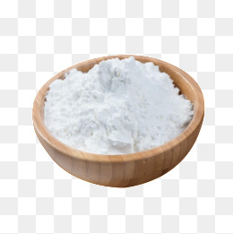

Making Potato Starch
What is potato starch? you might ask. Potato starch is another version of flour like corn starch but made out of potato instead of corn. Im going to teach you how to make it. You'll need:
- potatoes
- terry cloth (or) clean handkercheif
- small mixing bowl
- water (I know this might sound silly saying "water" but what if you live somewhere theres a big drought or limited water like cape town.)
- potato peeler
- grater
Instructions
- Peel and grate the potatoes.
- Half fill a small mixing bowl with water.
- Put the grated potatoes in the terry cloth/handkerchief and tie it up.
- Dip the cloth into the bowl of water, then squeeze it very hard into the bowl.
- Repeat step 4 until the water is very cloudy.
- Take the cloth out the water and throw out the grated potatoes.
- Let the water sit for 1 hour.
- Pour the water out of the bowl very carefully so as not to pour out the powder at the bottom.
- Leave the powder to dry out for a couple of hours.
The powder you have made is called starch.
Why:
- Plants and animals make starch as a way of storing sugars.
- Potatoes, rice, barley and wheat have large amounts of starch.
- When you eat foods high in starch, chemicals in your digestive juices change starch to sugars that can be used by your body for quick energy.
- Starch is also put on cloth to give it weight and make it smooth. The starch you have made can be used in this way when the cloth is ironed.
Mini Quiz:
What does starch have to do with adhesive paste?
Answer:
Starch and water are the main ingredients in adhesive paste. Starch is a natural polymer (a bonding agent) which makes it an good adhesive (glue).

Here is a picture of some in a bowl!